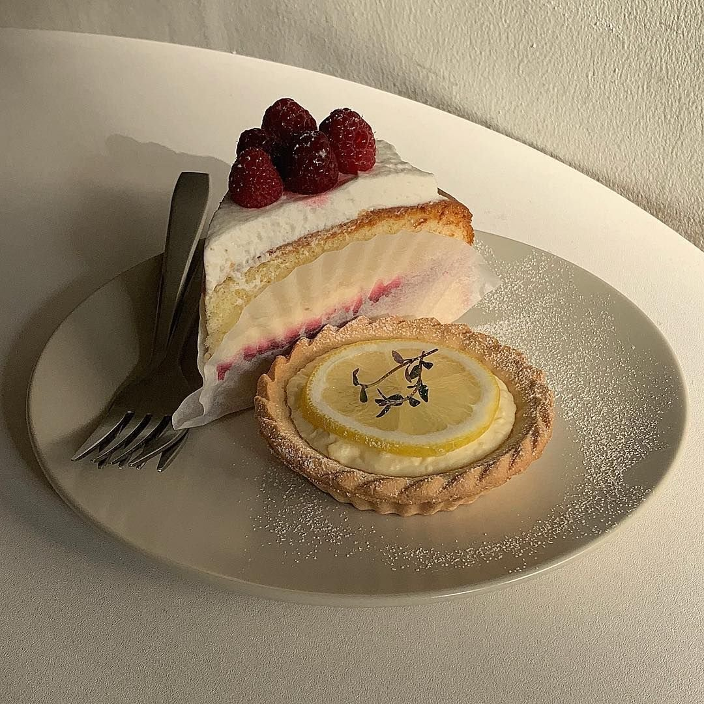

История создания сети МАМА РОМА
Mama Roma - динамично развивающаяся сеть итальянских ресторанов!
Всего 32 ресторана (в том числе франчайзи) открытых в Санкт-Петербурге и по всей России!

16 лучших шеф-поваров Санкт-Петербурга
Азиатская, итальянская или французская кухня? А, может быть, традиционный английский 5 o’clock tea?
Мы расскажем, в каких заведениях северной столицы за нее отвечают настоящие мастера своего дела.
Уникальное гастрономическое исследование?
Ведущие шеф-повара со всего мира объединились, чтобы подарить гурманам Петербурга неповторимые кулинарные впечатления. Разработка нового десерта,
которого еще не было!
